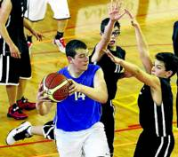

Hoy en los deportes, el equipo de SMX 2B a ganado el torneo de futbol del puig contra el equipo de DAM 1A, pero el equipo de DAM 1B no esta muy contento con el arbitrage realizado en el partido contra SMX 2B, "El arbitro nos ha robado el partido" afirmava uno de los miembros del equipo.
 En otros deportes, el equipo de baloncesto del puig BATX 1A a sido derrotado en la fianl contra el equipo de ESO 4B, mientras que en el partido para el tercer puesto lo a ganado el equipo de ESO 2A contra el equipo de ESO 3C.
Y en voleibol, el equipo de SMX 1B se a clasificado contra el equipo de BATX 2A para ir a la final del torneo de voleibol del puig, mientras tanto estamdo a la espera de ver cual sera el segundo clasificado, si el equipo de DAM 2B o DAM 2C.
E-SPORTS
Si ayer el primer día de la Jornada 8 de la Superliga Orange nos traía dos duelos en los que las primeras plazas estaban en juego, el segundo día ha sido el de los aspirantes a la Fase Final. G2Vodafone, Penguins, ASUS ROG Army y eMonkeyz se enfrentaban entre sí para intentar escalar en la clasificación y quedarse con la cuarta plaza a final de temporada.

{kind=link}